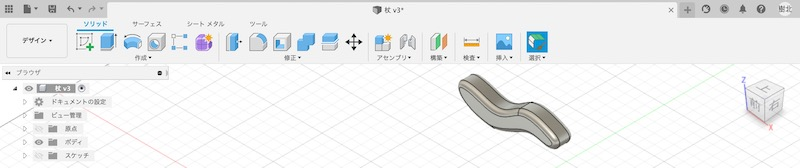
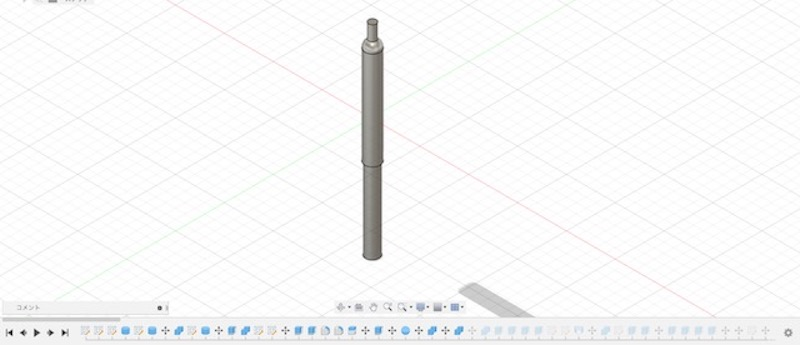
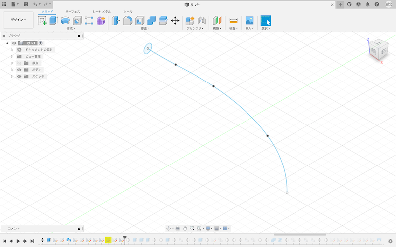
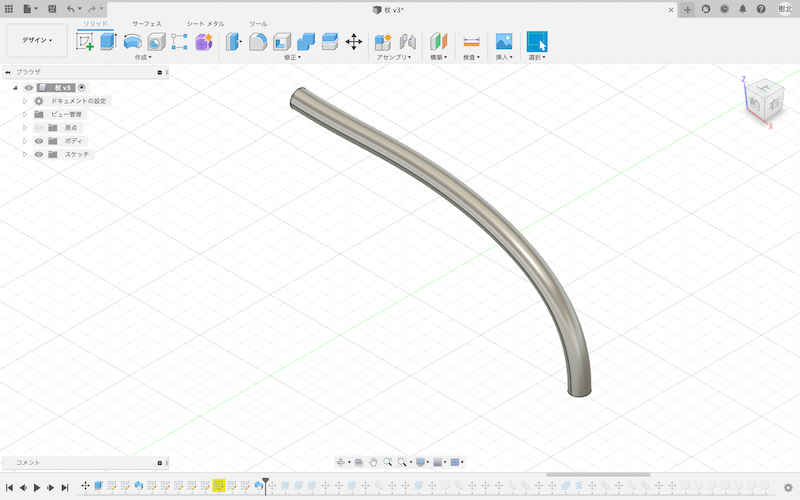

プロジェクト進捗状況3 （2021.6.1）
◉Fusion360でプロトタイプの製作
前回のインタビュー時に出てきた改善の余地がある商品として、今回は四点杖を製作する。
◉四点杖の改善点
○非舗装路・段差のある屋外では安定感がなく転倒してしまう可能性がある。
○質量の問題
→上記を改善した四点杖を作製する。
⒈ 持ち手の作成

スケッチで持ち手の輪郭を描き、立体にするために「押し出し」を行う。
次に、エッジを丸めるために「フィット」を行う。
持ち手完成！
⒉ 柄（シャフト）の作成

長さ調節を再現するために、二つの直径が異なる「円柱」を作製する。
次に、持ち手とシャフトの接合部分を「球」と「円柱」で作製する。
全てを「結合」してたら、シャフト完成！
3. 脚部の作成

スケッチで「円」・「線分」で脚の輪郭を描く。

「スイーブ」で「プロファイル」を円、「パス」を線分に設定し実行する。

段差も不自由なく通れるように荷重がかかっても耐えることができ、新宿が可能なバネをつけることにした。
「コイル」で適当な大きさのバネを作る。今回は５回転で作製した。
次に最も重要である先端部分を「ロフト」で作製した。
各部位を結合したら脚部の完成！
◉完成品


「レンダリング」で各パーツの外観を変更した。
軽量かつ耐久力のある「アルミニウム」をメイン素材として使用し、脚先・グリップのエッジには滑り止めとして「ゴム」を使用した。
グリップとシャフトはデザイン上「木」を使用しているが、アルミニウムの上に木の柄のステッカーを貼っていると考えてください。
反省点として、今回は不安定な場所も通れるようにするためにバネを使用したが、バネレート（バネの硬さ）をどれくらいに設定するべきか不明確であった。
硬すぎても反発が強くなるし、柔らかすぎても段差に耐えきれなくなり転倒のリスクが高まるので、ちょうど良いバネレートが求められる。